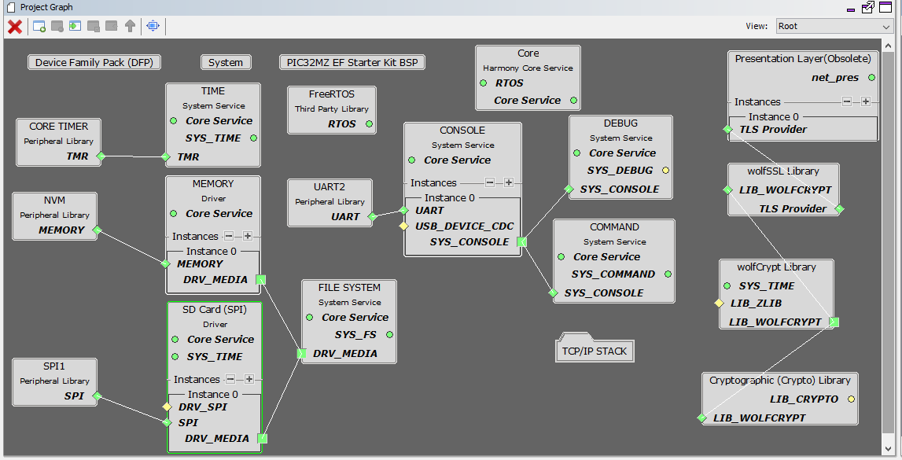
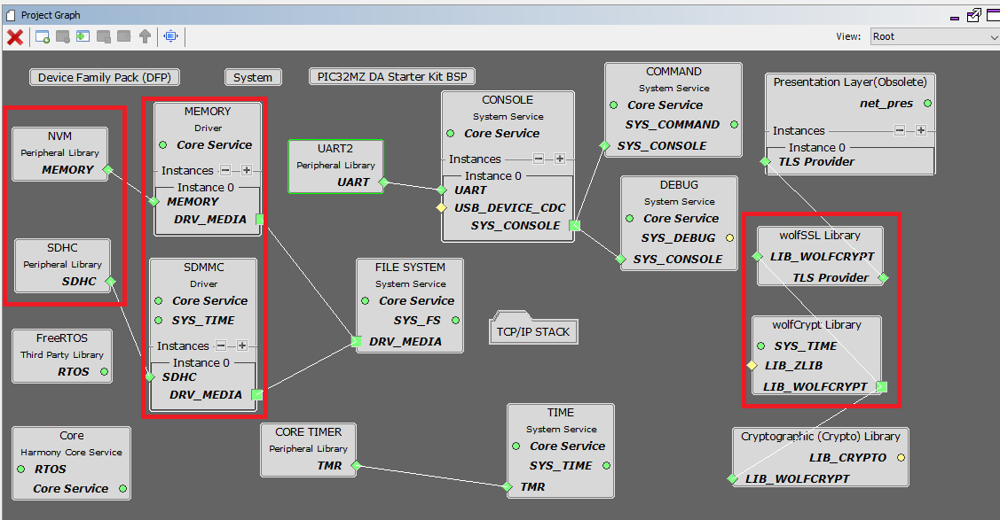

TCP/IP WEB-NET & FTP Server MHC Configuration
The following Project Graph diagram shows the Harmony components included in the application demonstration.
-
MHC is launched by selecting Tools > Embedded > MPLAB® Harmony 3 Configurator from the MPLAB X IDE and after successful database migration , TCP/IP demo project is ready to be configured and regenerated.

-
TCP/IP Root Layer Project Graph
-
PIC32MZ EF Device performs read/write to an SD card using SDSPI Module
SDSPI module is selected with SPI peripheral.
SDSPI driver uses an instance of the SPI driver to communicate to the SD card over the SPI bus.
The TCP/IP application demonstrates FAT file system to read/write to an SD card using SDSPI driver. FTP application use SPI peripheral to read/write from SDMMC module.

-
PIC32MZ DA device performs read/write to an SD card using SDMMC driver. FTP application use SDMMC driver to read/write from SDHC peripheral module.

Wolfssl crypto module enabled with MD5,SHA authentication. Wolfssl library used a open a secured socket.

FreeRTOS component is required for RTOS application. For bare-metal (non-RTOS) FreeRTOS component should not be selected.
Both MPFS and FAT File System Configuration

TCP sockets calculate the ISN using the wolfSSL crypto library.
-
-
TCP/IP Required Application
TCP/IP demo use these application module components for this demo.
Announce module to discover the Microchip devices within a local network.
DHCP Client module to discover the IPv4 address from the nearest DHCP Server.
HTTPNET module is selected to run the web_server for the port number 443.
FTP SERVER an application layer protocol that facilitates uploading of files to, and downloading of files from, an embedded device.

- HTTPNET server with Web directory Mount path and Security port number configuration:
 Http Server module use the NVM mount path with MPFS files system. Also HTTP server module use the secured port number 443.
Http Server module use the NVM mount path with MPFS files system. Also HTTP server module use the secured port number 443. - FTP server use the FAT FS to access files from SDCARD.
-
TCPIP Driver Layer
Internal ethernet driver(ethmac) is enabled with the external LAN8740 PHY driver library. The MIIM Driver supports asynchronous read/write and scan operations for accessing the external PHY registers and notification when MIIM operations have completed.